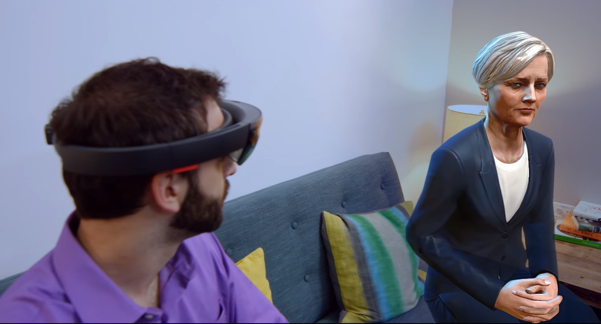
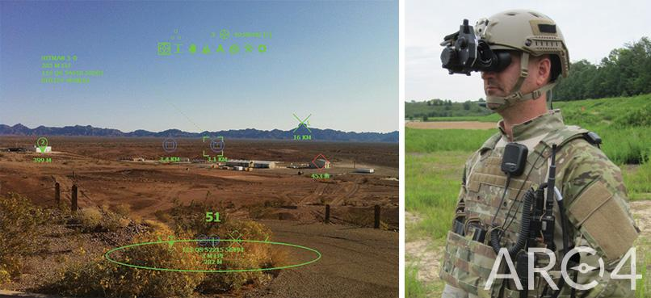
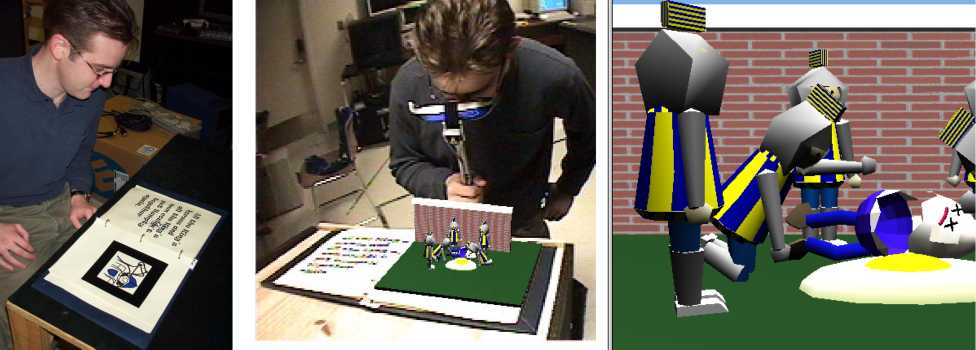

Uses
Overview
Augmented Reality (AR) technology overlays computer-generated images onto the real world, so that instead of drawing the user away from reality, it enhances it. It is a powerful tool, and like many other tools, it is being used in many industries already, and has the potential for many other applications in the future.
Read below to learn more about uses for AR!
Did You Know?
When watching your favorite football game, the brightly colored lines signifying the line of scrimmage and the first down line are an example of AR!

Source: Maret, 2010
Gaming
Virtual reality has taken the gaming market by storm, but its cousin Augmented Reality has made some great leaps too. The world still has not forgotten the AR smash hit Pokemon Go, by Niantic. But developments have not only been made in AR for mobile gaming, but also in gaming with AR HMDs. Levels and settings in AR are not predetermined by a game designer, but adapt to the real world around the player, giving players more interesting variety. The future looks bright for augmented reality games.
HMD Games
The developer edition of the Microsoft Hololens, released late February 2016, comes with a few games out of the box to show off its capabilities. These demonstration games were intended to inspire and motivate developers to create content for the Hololens, as it is still a Windows 10 platform (Hachman 2016a). Each of these games adapt the environment that the user is in. To do so, the Hololens “scans” the room with the built-in camera, dividing all the real objects into CG vertices (Hachman 2016b).

The Microsoft Hololens scans the environment around the user, dividing virtual objects into virtual vertices (Hachman 2016b).
Young Conker
Young Conker is a platform game that follows the adventures of an intrepid squirrel named Conker. This game is unlike many other platformers, as the Corporate Vice President for Hololens Kudo Tsunoda explains: “Unlike with traditional video games, where people play the same digitally created levels – Young Conker tailors each of the levels you play to your real world”. This means that players can get a completely different experience by changing rooms, or even just moving furniture around (Hachman 2016a; Hachman 2016b).

Conker knows when he is at the edge of a table, and responds accordingly (Young Conker).
Fragments
Microsoft has described Fragments as “a mixed reality crime drama that unfolds in your own environment”. Basically, the Hololens allows the player to experience life-like “characters” sitting next to them on the couch, or virtual objects as “evidence” hidden underneath the table. Because the Hololens scanned the playing environment, the game knows where characters can sit, or where the walls are as a location for a hidden safe (Hachman 2016a; Hachman 2009b)
{kind=link}
The characters in Fragments can interact with your furniture. In this case, a character appears to be sitting on a real-world couch (Hachman 2016a)
Mobile Gaming
Pokemon Go
It would be remiss to not mention the worldwide phenomenon, Pokemon Go, a mobile game created by Niantic. This app set itself apart from other games of the beloved Pokemon series, by using augmented reality. Three-dimensional models of Pokemon, the fictional fighting pet monsters were overlaid onto the displayed output from the smartphone’s camera. This created the illusion that the Pokemon were actually standing where the camera was pointed, if looking through the phone screen.

Pokemon Go players catch virtual Pokemon that appear to be standing (or flying) right in front of them (Park, 2016)
Ingress
The predecessor to Pokemon Go was the AR game Ingress, also developed by Niantic and released late 2013. The “geolocation based” gameplay involved capturing “portals” at real-world places of interest, such as famous buildings and monuments. But in order to do anything with the portals, you had to actually be at that location. Computer generated particle effects and 3D models of the portals were overlaid onto a map of the real world, making this game AR (Henry 2015). This game laid the foundation for Niantic’s later success, Pokemon Go; popular locations for players of Ingress later became Pokestops and Gyms (Turk 2016).

A map of Paris overlaid as shown in Ingress, showing the portals of two competing factions, the Enlightened (green) and the Resistance (blue) (Beltzung 2015).
Military
The military is always looking for new technology to give soldiers an edge on the battlefield. One way to accomplish this is through augmented reality.
The ARC4 system, developed by Applied Research Associates, provides a dynamic HUD that gives important information to soldiers such as their bearing, nearby allies, points of interest, and their relative distances from each (Roberts).
{kind=link}
The ARC4 HUD allows soldiers to see useful information such as bearing, points of interest, allies, and their relative position from each (Roberts).
Augmented reality can help not only on the ground, but in the air. The F-18 fighter jet, developed by McDonnell Douglas and introduced in 1983, has a simple AR heads-up display (HUD) conveying key information to the pilot within their field of view (Chen 2014).

Pilots of the F-18 fighter jet use an augmented reality HUD to view key information (Chen 2014).
More recently, pilots of the new F-35 fighter jet, developed by Lockheed, will wear a helmet that has AR capabilities. When the pilot turns their head, they are able to see outside of the plane in all directions, thanks to six cameras mounted on the plane’s body. Additionally, this view highlights points of interest such as enemy vehicles, both in the air and on the ground (Davenport, 2015). To ensure that these expensive vehicles are built correctly, Lockheed has partnered with NGRAIN to allow employees to wear an AR headset that overlays renderings of every component of the jet. This same headset allows for annotations that all users of the software can view, speeding up the repair process (Grant, 2008).
Civil Uses
Augmented reality has a place during the construction of buildings as well. With markers such as QR codes, contractors can view an overlaid BIM model of the intended construction, alongside actual construction progress. Images can be taken in this fashion, aiding workers and helping prevent costly mistakes in construction.
Since September of 2010, civil planners in Christchurch, New Zealand have used an AR app called CityViewAR, developed by the Human Interface Technology Lab at the University of Canterbury. They used this app to display accurately scaled 3D models of buildings, the way they were before the damage caused by the earthquakes. These visualizations help planners and engineers determine how best to renovate and rebuild the city in the future (Human Interface Technology Lab).
SmartReality from JBknowledge, a technology company previously known for bringing subcontractors and jobs together, is a mobile AR app available as a beta test on a per-project basis. It can place a 3D model in context, viewable through an iPad or iPhone, whether on a 2D set of plans, in front of an actual site, or even on an image of your project’s site. Users focus on a given design or plan file with the camera on their iPad, iPad Mini, or iPhone; the app then recognizes the design, and the screen overlays a virtual model of what the project will look like upon completion. Anyone can see a Revit model in context, in a full, 360-degree view (Yoders, 2014).

SmartReality by JBKnowledge allows architects to view a 3D Revit model of buildings by pointing the camera at floor plans (Yoders 2014).
Medicine
Medicine is a field where many kinds of cutting edge technology is used to save lives, and augmented reality is no exception. A lot of complex procedures are surgeries which take place deep inside the body, underneath the skin. Such procedures require ultrasound to see what is going on. This forces the doctor to not be looking directly at his work, instead looking at it through a screen. This is where AR can help.
Researchers at UNC Chapel Hill have explored the possibility for AR to display ultrasound imagery directly over the doctor’s field of view, instead of on a separate screen. Users wear an HMD, which contains video cameras and infrared LED detectors that track IR LEDs placed on the doctor’s tools. The processor on the HMD can determine the location and orientation of the tools with “sub-millimeter” accuracy (Rosenthal et al., 2001).

Doctors performing the biopsy wear a specially made video see-through HMD equipped with infrared LEDs that track their tools (Rosenthal et al., 2001).
The researchers performed an experiment comparing traditional biopsy methods with their AR biopsy method, and found that the AR method “led to a statistically significantly smaller mean deviation from the desired target”. This increased accuracy could someday save lives, and additional studies with real human subjects are currently underway (Rosenthal et al., 2001).

The view from the HMD shows an overlaid image ultrasound image of the target tumor and virtual representation of the needle entering the patient’s body (Rosenthal et al., 2001).
Education
AR technology could help students visualize their learning in a new way, allowing for a deeper level of interactivity and understanding. According to studies by Inkpen (1997) and Watson (1991), children work better if they are focused on a common workspace, as opposed to separate computers for each. Additionally, sitting together around a table encourages conversation, as opposed to clustering around a single screen. Augmented reality provides both of these benefits, allowing students to see a common AR interface while sitting at a table, leading to more natural communication and collaboration.
In traditional classrooms, often physical props are used as a teaching device. This helps children who are visual and tactile learners. Augmented reality enhances that experience, allowing for props which are dynamic and contextual. This has been put into practice in the Shared Space interface. Users wear a head-mounted display (HMD) which searches for markers on certain cards, similar to flashcards. Then, the user sees a 3D model of objects overlaid onto the flashcards. Flashcards with objects that are related to each other, such as an alien and a UFO, interact with each other when placed close together. This technology was demonstrated SIGGRAPH99 conference, and participants remarked that the system was intuitive and immersive (Billinghurst 2000).

The Shared Space AR interface lets users wearing a video HMD headset to view specially marked cards as 3D virtual objects (Billinghurst 2016).
More recently, Daqri, LA-based startup, has been developing AR wooden blocks with periodic table elements. When elements are placed together and viewed the tablet app, the blocks appear to chemically react with one another. This brings chemistry to life for future scientists (Ogen, 2015).

Daqri’s app Elements 4D brings the periodic table to life! Users print out and assemble blocks of elements online, and viewing the cubes through the app, they appear to be their actual physical form inside a glass container. Notice that when placing two element blocks that can bond with each other (Sodium and chlorine), the app shows them bonded (Sodium chloride, or table salt) (Ogen, 2015).
Textbooks are a staple of any classroom, and teachers are in need to make the content more memorable to their students. One way to do that is through augmented reality. The MagicBook augmented reality interface turns flat pages into 3D environments, like a virtual pop up book. The only hardware required is a handheld AR display, similar to opera glasses. The project applied the technology to children’s stories and fairy tale books, but remarked upon the possibility of using it in reading material in the classroom (Billinghurst 2002).
{kind=link}
The MagicBook augmented reality interface turns flat pages into a virtual pop-up book (Billinghurst 2002).
Commerce and Advertising
Advertisers are always looking for new ways to grab consumers’ attention. AR technologies could allow for several advertising techniques that were not possible before. Alex Smith of Social Media Today describes 4 benefits of marketing with augmented reality over traditional methods (2015).
- Novelty: At the moment, it is a new and novel technology that catches people’s attention and gives the brand a feeling of being ahead of its time.
- Personalization: User uploading and sharing allows for a highly personalised space for the consumer.
- Content: Augmented reality apps make creating media much more accessible to consumers of all skill levels,
- Interactivity: Augmented reality content is not just static like traditional methods of advertising, but respond to stimulus by the user. There is an element of surprise when sharing AR content, encouraging users to share it with more people.
Popular Swedish furniture store IKEA is using AR to address the rather common problem that customers take home a piece of furniture and find that it doesn’t actually fit where they intend it to. They created an AR app that lets customers preview how a piece of furniture would fit in their homes. All the customer has to do is scan an icon accompanying a piece of furniture in a physical copy of the IKEA catalog, then place the catalog where they intend the furniture to be placed. Looking through the table shows the customer a correctly scaled version of the furniture over the location of the catalog (Ridden, 2013).

IKEA furniture store’s app allows customers to see what a piece of furniture would look like within their room (Ridden, 2013).
Digital retailer Argos has embraced AR and incorporated it into its publications. They printed special “Argos scan” icons within their catalog, which users scan using the Argos app on their smartphone. This brings up AR items on their phone such as 3D models and games. Imagine an Argos customer wants to decide among several watches on their catalogue. Using AR technology, they can “try on” a virtual version of the watch to see what it actually looks like on their wrist (Hewlett Packard Development Company).
Manufacturing
In factories across the nation, AR is increasing accuracy and productivity while decreasing the workload of employees. The field has grown so much that the acronym IAR has been coined, standing for “Industrial Augmented Reality”.
Manufacturing companies want to take advantage of two characteristics of AR: its richness, and its ability to attach media to real-world objects. Text can be displayed over objects to instruct workers, or virtual objects may be attached to real assemblies to convey how each part is to be assembled. Ulrich Neumann of the University of Southern California explains that “The whole point is to reduce the cognitive load on the worker by making instructions clearer and information easier to understand” (Acosta 2015).
It all started in the early 1990s, when David Mizell of Boeing developed the first IAR application: a project designed to remove the need for prefabricated guidance boards for wiring, instead instructing technicians with a see-through head mounted display (HMD). This was the first use of a HMD in any context (Navab 2004). Since then, other projects have explored the possibilities of AR without HMDs. Researchers at the Technical University of Munich, in collaboration with BMW, developed the “Intelligent Welding Gun”. This was a traditional welding gun modified with a display that guided welders to the next stud to be welded, with a precision of 0.9 mm. The advantages of this system is that it is relatively versatile, not requiring a HMD nor tethering of any kind (Echtler et al., 2013).

The Intelligent Welding Gun, developed by researchers at the University of Munich, guides workers to the next spot to be welded (Echtler et al., 2013).
Dexter Lilley, Chief Operating Officer of Index AR Solutions, predicted in 2015 that AR would be most beneficial in industries that require a significant amount of skilled labor, such as heavy manufacturing, building construction, and oil and gas operations.
Works Cited
Acosta, S. (2014, December 16). An Introduction to Augmented Reality in Manufacturing. Retrieved from http://advancedmanufacturinginsight.com/archived-articles/item/augmented-reality-manufacturing
Azuma, Robert T. (1997). A survey of augmented reality. Presence, 6(4), 355-385. Retrieved from http://www.mitpressjournals.org/doi/pdfplus/10.1162/pres.1997.6.4.355
Beltzung, L. (2015, January 8). The king of augmented reality street fighting. Motherboard. Retrieved from https://motherboard.vice.com/en_us/article/the-king-of-augmented-street-fighting-the-worlds-best-ingress-player
Billinghurst, M. (2002). Augmented reality in education. New Horizons for Learning. Retrieved from http://education.jhu.edu/newhorizons
Billinghurst, M. (2016). VSMM 2016 Keynote: Using AR and VR to create Empathic Experiences [Powerpoint slides]. Retrieved from https://www.slideshare.net/marknb00/vsmm-2016-keynote-using-ar-and-vr-to-create-empathic-experiences
Billinghurst, M., Poupyrev, I., Kato, H., May, R. (2000). Mixing realities in shared space: An augmented reality interface for collaborative computing. Retrieved from https://pdfs.semanticscholar.org/9e18/8f553e2bc7be8917def5be542b0bb7cd773e.pdf
Bilton, N. (2015, February 04). Why Google Glass broke. The New York Times. Retrieved from https://www.nytimes.com/2015/02/05/style/why-google-glass-broke.html
Chen, A. (2014, March 3). HUD [Blog post]. Retrieved from http://acaviationlife.blogspot.jp/2014/03/hud.html
Davenport, C. (2015, April 1). Meet the most fascinating part of the F-35: The$400,000 helmet. The Washington Post. Retrieved from https://www.washingtonpost.com/news/checkpoint/wp/2015/04/01/meet-the-most-fascinating-part-of-the-f-35-the-400000-helmet/
Davis, D. (2016, July 28). Real-world risks in an augmented reality. CSO. Retrieved from http://www.csoonline.com/article/3101644/techology-business/real-world-risks-in-an-augmented-reality.html
Doyle, B. (2016, February 28). 5 reasons why Google Glass was a miserable failure. Business 2 Community. Retrieved from http://www.business2community.com/tech-gadgets/5-reasons-google-glass-miserable-failure-01462398#IyHsAbJ13HhrcabE.97
Echtler, F., Sturm, F., Kindermann, K., Klinker, G., Stilla, J., Trilk, J., Najafi, H. (2013). The intelligent welding gun: Augmented reality for experimental vehicle construction. In S.K., Ong, A.Y.C., Nee (Eds.), Virtual and Augmented Reality Applications in Manufacturing (1-17). New York: Springer Science and Business Media. Retrieved from https://pdfs.semanticscholar.org/9ea0/0cd33b9a000ab79ad02eb6c190f33307feaf.pdf
Glass help [Support center]. (n.d.). Retrieved from https://www.google.com/glass/help/
Grant, S. (2008, February 19). Lockheed Martin Selects NGRAIN for Joint Strike Fighter Aircraft Program. Market Wired. Retrieved from http://www.marketwired.com/press-release/lockheed-martin-selects-ngrain-for-joint-strike-fighter-aircraft-program-822484.htm
Hachman, M. (2016a, February 29). Here are the first amazing games and apps for Microsoft's HoloLens. PCWorld. Retrieved from http://www.pcworld.com/article/3038227/hardware/here-are-the-first-amazing-games-and-apps-for-microsofts-hololens.html
Hachman, M. (2016b, March 29). How augmented reality will change gaming, according to a HoloLens developer. PCWorld. Retrieved from http://www.pcworld.com/article/3047652/hardware/hololens-developer-reveals-how-ar-is-changing-the-game-in-every-sense-of-the-word.html
Henry, A. (2015, June 6). How Ingress, Google’s real-world smartphone game, got me out of my shell [Blog post]. Retrieved from http://lifehacker.com/how-ingress-googles-real-world-smartphone-game-got-me-1710320867
Heimgartner, J. (2016, April 13). What is augmented reality and how can engineers and designers use it?. Retrieved from http://www.engineering.com/DesignSoftware/DesignSoftwareArticles/ArticleID/11873/What-Is-Augmented-Reality-and-How-Can-Engineers-and-Designers-Use-It.aspx
Hewlett-Packard Development Company. L.P. (n.d.). Argos launches Aurasma-powered augmented reality in app. Retrieved from https://www.aurasma.com/news/argos-launches-aurasma-powered-augmented-reality-in-app/
Human Interface Technology Lab, New Zealand. (n.d.) CityViewAR. Retrieved from http://www.hitlabnz.org/index.php/products/cityviewar/
Inkpen, K. (1997). Adapting the Human Computer Interface to Support Collaborative Learning Environments for Children (PhD Dissertation, Dept. of Computer Science, University of British Columbia). Retrieved from https://open.library.ubc.ca/cIRcle/collections/ubctheses/831/items/1.0051664
King, C., Klinedinst, D. J., Lewellen, T., & Wassermann, G. (2017, April 03). 2016 Emerging Technology Domains Risk Survey. Retrieved from the Software Engineering Institute, Carnegie Mellon University website: http://resources.sei.cmu.edu/library/asset-view.cfm?assetid=453809
Maret, B. (2010, December 2). Things I don’t get about football [Blog post]. Retrieved from http://maretsplayground.blogspot.com/2010/12/things-i-dont-get-about-football.html
Microsoft Hololens [Product page]. (n.d). Retrieved from https://www.microsoft.com/en-us/hololens
Milgram, P., Takemura, H., Utsumi, A, & Kishino, F. (1994). Augmented reality: A class of displays on the reality-virtuality continuum. SPIE, 2531, 282-292. Retrieved from http://etclab.mie.utoronto.ca/publication/1994/Milgram_Takemura_SPIE1994.pdf
Mohr, K. (2016, January 28). 2016 predictions: Augmented reality ready to tackle industrial challenges [Blog post]. Retrieved from https://www.manufacturing.net/blog/2016/01/2016-predictions-augmented-reality-ready-tackle-industrial-challenges
Newman, J. (2012, April 4). Google’s ‘Project Glass’ teases augmented reality glasses. PCWorld. Retrieved from http://www.pcworld.com/article/253200/googles_project_glass_teases_augmented_reality_glasses.html
Ogen, K. (2015, October 5). Augmented reality elements 4D blocks and app by Daqri [Blog post]. Retrieved from http://www.karenogen.com/2015/10/augmented-reality-elements-4d-blocks.html
Park, H. (2016, July 12). Pokemon GO just accelerated adoption for enterprise augmented reality. Blue Hill Research. Retrieved from http://bluehillresearch.com/pokemon-go-just-accelerated-adoption-for-enterprise-augmented-reality/
Rogers, M. (2013, July 17). Hacking the internet of things for good [Blog post]. Retrieved from https://blog.lookout.com/blog/2013/07/17/hacking-the-internet-of-things-for-good/
Ridden, P. (2013, August 14). IKEA catalog uses augmented reality to give a virtual preview of furniture in a room. NewAtlas. Retrieved from http://newatlas.com/ikea-augmented-reality-catalog-app/28703/
Roberts, D. (n.d.). ARC4: Heads-up on-the-move augmented reality technology. Retrieved from https://www.ara.com/projects/arc4-heads-move-augmented-reality-technology
Rosenthal, M., State, A., Lee, J., Hirota, G., Ackerman, J., Keller, K., . . . Fuchs, H (2001). Augmented reality guidance for needle biopsies: A randomized, controlled trial in phantoms. Springer Lecture Notes in Computer Science (LNCS), 240-248. Retrieved from http://www.cs.unc.edu/Research/MIDAG/pubs/papers/MICCAI01-rosenthal-AugReality.pdf
Sabelman, E. E., & Lam, R. (2015, June 23). The real-life dangers of Augmented Reality. IEEE Spectrum. Retrieved from http://spectrum.ieee.org/consumer-electronics/portable-devices/the-reallife-dangers-of-augmented-reality
Smith, A. (2015, February 07). 5 Benefits of Augmented Reality Marketing. Social Media Today. Retrieved from http://www.socialmediatoday.com/content/5-benefits-augmented-reality-marketing
Turk, V. (2016, July 13). What ‘Pokemon Go’ owes ‘Ingress’. Motherboard. Retrieved from https://motherboard.vice.com/en_us/article/what-pokemon-go-owes-ingress
Underwood, R. (2013, September 30). Augmented Reality for Businesses. Inc Magazine. Retrieved from http://www.inc.com/magazine/201310/ryan-underwood/augmented-reality-for-businesses.html
Young Conker [Product page]. (n.d). Retrieved from https://www.microsoft.com/en-us/store/p/young-conker/9nblggh5ggk1
Yoders, J. (2014, March 24). What is augmented reality, and how can it help architects and contractors?. Retrieved from https://redshift.autodesk.com/what-is-augmented-reality/